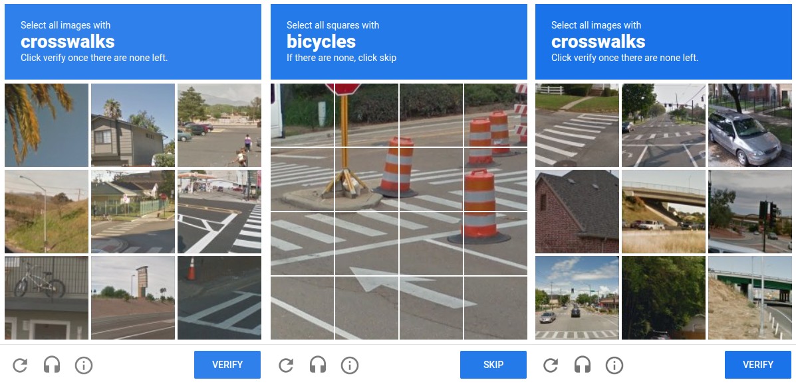

Qu'est-ce qu'un Captcha ?
D'après le Dictionnaire, c'est un test requis pour accéder à certains services sur Internet, qui consiste à saisir une courte séquence visible sur une image, afin de différencier les utilisateurs humains d'éventuels robots malveillants.
Les Captchas auxquels vous avez l'habitude d'être soumis sont confectionnés à l'aide d'un code PHP. En effet, le serveur génère une image aléatoire en PHP à l'aide de lettres et chiffres de différentes couleurs et polices, puis l'utilisateur doit saisir cette séquence de caractères.
Il y a bien évidemment d'autres styles de vérification, comme reCaptcha de Google qui fonctionne à l'aide de photos à identifier.
Cet outil s'utilise afin de limiter l'accès à votre site web aux robots, bots, logiciels malveillants, etc. Il est donc pratique pour protéger votre site et le rendre plus sûr !